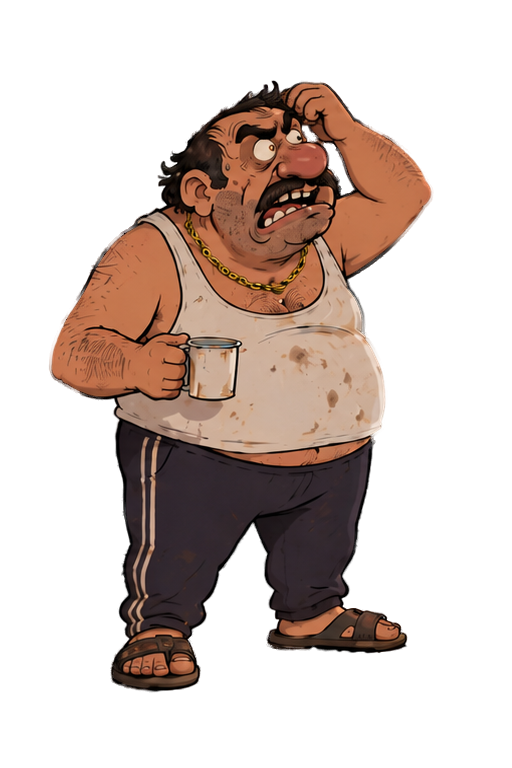
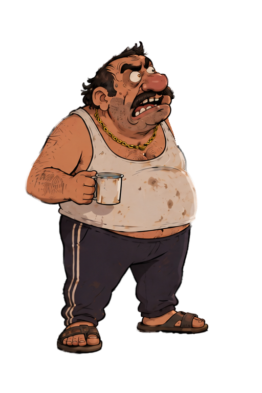
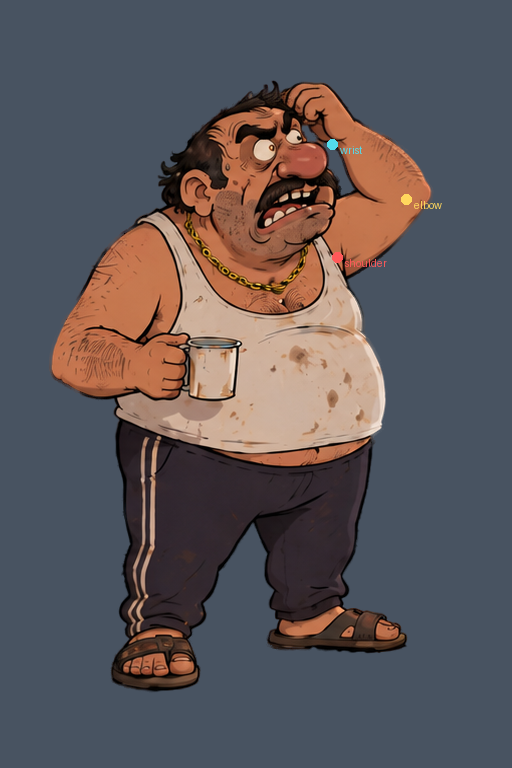
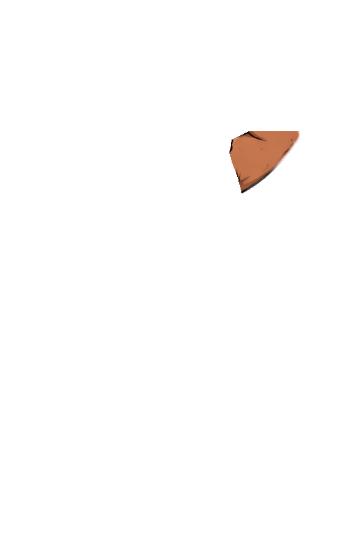
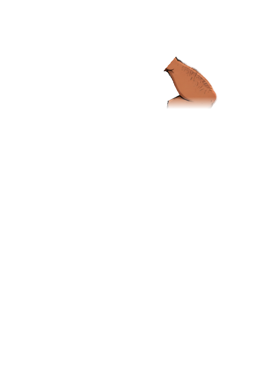
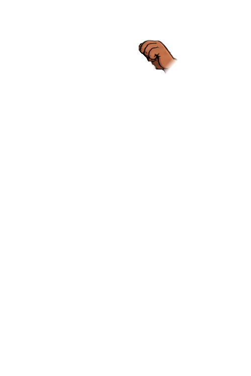

Vrstvená ruka: škrábání na hlavě
Původní kresba a tři vrstvy ruky. Pohyb předloktí a zápěstí s pevnými
délkami kostí; horní paže zůstává na místě. OpenAI dokreslilo podklad za
rukou. Bez změny herního obsahu.
 Původní póza na společném plátně
Původní póza na společném plátně

Pohyb po kloubech · 16 snímků/s
Animovaný GIF ·
Detail póz ·
Pixi atlas ·
Kontrola pixelů a kloubů
Podklad a rozdělení ruky

Podklad: původní pixely + lokální AI oprava

Klouby

Paže

Předloktí

Dlaň